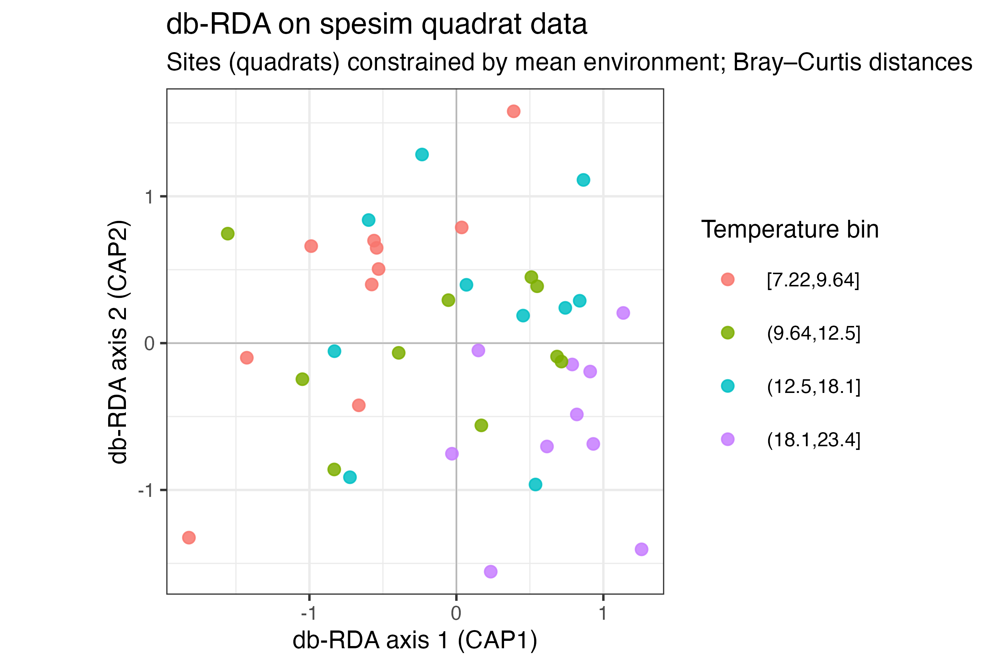
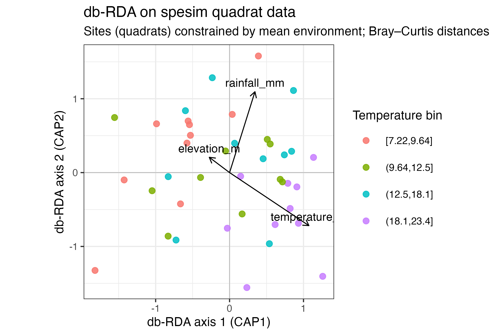

Constrained ordination (db-RDA) on simulated spesim data
Source:vignettes/spesim-ordination-dbrda.Rmd
spesim-ordination-dbrda.RmdThis vignette shows how to use spesim to generate a realistic (but known) community dataset for practising constrained ordination.
We will:
- Simulate a community in an irregular domain with strong environmental gradients.
- Add positive and negative interspecific interactions (local neighbourhood effects).
- Sample the landscape with quadrats to obtain:
- a site × species abundance table
- a site × environment table (mean environment per quadrat)
- Fit a distance-based RDA (db-RDA) using
vegan’s
capscale(). - Create db-RDA plots in the same style as Tangled Bank’s BCB743 constrained ordination material.
2) Configure a simulation with strong gradients + interactions
We start from the packaged basic init file and then modify it.
`%||%` <- function(a, b) if (!is.null(a)) a else b
init_file <- system.file("examples/spesim_init_basic.txt", package = "spesim")
P <- load_config(init_file)
# --- keep the vignette fast-ish
P$N_INDIVIDUALS <- 3000L
P$N_SPECIES <- 16L
P$N_QUADRATS <- 40L
P$SAMPLING_RESOLUTION <- 70L
P$ENVIRONMENTAL_NOISE <- 0.02
P$ADVANCED_ANALYSIS <- FALSE
# --- strong filtering (narrow tolerances)
P$GRADIENT_SPECIES <- LETTERS[1:10]
P$GRADIENT_ASSIGNMENTS <- c(
rep("temperature", 4),
rep("elevation", 3),
rep("rainfall", 3)
)
P$GRADIENT_OPTIMA <- 0.5
P$GRADIENT_TOLERANCE <- 0.06
# --- local interactions
# Values < 1 weaken neighbours (negative interactions); > 1 strengthen (positive).
P$INTERACTION_RADIUS <- 1.0
P$INTERACTIONS_EDGELIST <- c(
# negative (competition/inhibition)
"B,A,0.80",
"C,A,0.85",
"D,B,0.75",
"E,D,0.80",
# mild background pressure for some focal species (from all neighbours)
"B,*,0.98",
"C,*,0.98",
# positive (facilitation)
"F,G,1.25",
"G,F,1.15",
"H,I,1.20",
"I,H,1.10"
)
# Reproducibility
P$SEED <- 2026LRun the simulation:
res <- spesim_run(P, write_outputs = FALSE, seed = P$SEED, quiet = TRUE)R> ---- Interactions Summary ----
R> Species: 16 (A..P)
R> Radius : 1
R> Non-1 entries: 36 (14.1% of 256)
R> Asymmetry (mean |M - t(M)|): 0.009
R>
R> Non-1 entries (sorted by |value-1|):
R> focal neighbor value
R> D B 0.75
R> F G 1.25
R> E D 0.80
R> H I 1.20
R> G F 1.15
R> I H 1.10
R> B A 0.98
R> B C 0.98
R> B D 0.98
R> B E 0.98
R> B F 0.98
R> B G 0.98
R> B H 0.98
R> B I 0.98
R> B J 0.98
R> B K 0.98
R> B L 0.98
R> B M 0.98
R> B N 0.98
R> B O 0.98
R> ------------------------------
R> ========== INITIALISING SPATIAL SAMPLING SIMULATION ==========
R> ========== SIMULATION PARAMETERS ==========
R> list(SEED = 2026L, OUTPUT_PREFIX = "out/run_basic", N_INDIVIDUALS = 3000L,
R> N_SPECIES = 16L, DOMINANT_FRACTION = 0.3, FISHER_ALPHA = 4.2,
R> FISHER_X = 0.95, GRADIENT_SPECIES = c("A", "B", "C", "D",
R> "E", "F", "G", "H", "I", "J"), GRADIENT_ASSIGNMENTS = c("temperature",
R> "temperature", "temperature", "temperature", "elevation",
R> "elevation", "elevation", "rainfall", "rainfall", "rainfall"
R> ), GRADIENT_OPTIMA = 0.5, GRADIENT_TOLERANCE = 0.06, SAMPLING_RESOLUTION = 70L,
R> ENVIRONMENTAL_NOISE = 0.02, MAX_CLUSTERS_DOMINANT = 5, CLUSTER_SPREAD_DOMINANT = 3,
R> INTERACTION_RADIUS = 1, INTERACTION_MATRIX = structure(c(1,
R> 0.98, 0.98, 1, 1, 1, 1, 1, 1, 1, 1, 1, 1, 1, 1, 1, 1, 1,
R> 0.98, 0.75, 1, 1, 1, 1, 1, 1, 1, 1, 1, 1, 1, 1, 1, 0.98,
R> 1, 1, 1, 1, 1, 1, 1, 1, 1, 1, 1, 1, 1, 1, 1, 0.98, 0.98,
R> 1, 0.8, 1, 1, 1, 1, 1, 1, 1, 1, 1, 1, 1, 1, 0.98, 0.98, 1,
R> 1, 1, 1, 1, 1, 1, 1, 1, 1, 1, 1, 1, 1, 0.98, 0.98, 1, 1,
R> 1, 1.15, 1, 1, 1, 1, 1, 1, 1, 1, 1, 1, 0.98, 0.98, 1, 1,
R> 1.25, 1, 1, 1, 1, 1, 1, 1, 1, 1, 1, 1, 0.98, 0.98, 1, 1,
R> 1, 1, 1, 1.1, 1, 1, 1, 1, 1, 1, 1, 1, 0.98, 0.98, 1, 1, 1,
R> 1, 1.2, 1, 1, 1, 1, 1, 1, 1, 1, 1, 0.98, 0.98, 1, 1, 1, 1,
R> 1, 1, 1, 1, 1, 1, 1, 1, 1, 1, 0.98, 0.98, 1, 1, 1, 1, 1,
R> 1, 1, 1, 1, 1, 1, 1, 1, 1, 0.98, 0.98, 1, 1, 1, 1, 1, 1,
R> 1, 1, 1, 1, 1, 1, 1, 1, 0.98, 0.98, 1, 1, 1, 1, 1, 1, 1,
R> 1, 1, 1, 1, 1, 1, 1, 0.98, 0.98, 1, 1, 1, 1, 1, 1, 1, 1,
R> 1, 1, 1, 1, 1, 1, 0.98, 0.98, 1, 1, 1, 1, 1, 1, 1, 1, 1,
R> 1, 1, 1, 1, 1, 0.98, 0.98, 1, 1, 1, 1, 1, 1, 1, 1, 1, 1,
R> 1, 1, 1), dim = c(16L, 16L), dimnames = list(c("A", "B",
R> "C", "D", "E", "F", "G", "H", "I", "J", "K", "L", "M", "N",
R> "O", "P"), c("A", "B", "C", "D", "E", "F", "G", "H", "I",
R> "J", "K", "L", "M", "N", "O", "P"))), INTERACTIONS_FILE = NULL,
R> INTERACTIONS_EDGELIST = c("B,A,0.80", "C,A,0.85", "D,B,0.75",
R> "E,D,0.80", "B,*,0.98", "C,*,0.98", "F,G,1.25", "G,F,1.15",
R> "H,I,1.20", "I,H,1.10"), SAMPLING_SCHEME = "random", N_QUADRATS = 40L,
R> QUADRAT_SIZE_OPTION = "medium", N_TRANSECTS = 1, N_QUADRATS_PER_TRANSECT = 8,
R> TRANSECT_ANGLE = 90, VORONOI_SEED_FACTOR = 10, POINT_SIZE = 0.2,
R> POINT_ALPHA = 1, QUADRAT_ALPHA = 0.05, BACKGROUND_COLOUR = "white",
R> FOREGROUND_COLOUR = "#22223b", QUADRAT_COLOUR = "black",
R> ADVANCED_ANALYSIS = FALSE, SPATIAL_PROCESS_A = "poisson",
R> A_PARENT_INTENSITY = NA_real_, A_MEAN_OFFSPRING = 10, A_CLUSTER_SCALE = 1,
R> SPATIAL_PROCESS_OTHERS = "poisson", OTHERS_BETA = NA_real_,
R> OTHERS_GAMMA = NA_real_, OTHERS_R = 1, OTHERS_S = 2, GRADIENT = structure(list(
R> species = c("A", "B", "C", "D"), gradient = c("temperature",
R> "temperature", "elevation", "rainfall"), optimum = c(0.5,
R> 0.5, 0.5, 0.5), tol = c(0.12, 0.12, 0.12, 0.12)), class = c("tbl_df",
R> "tbl", "data.frame"), row.names = c(NA, -4L)))
R>
R> ========== RUNNING SIMULATION ==========3) The two tables we need for constrained ordination
3.1 Species table (responses)
res$abund_matrix is a site × species abundance
table.
A <- res$abund_matrix
head(A)R> site A B C D E F G H I J K L M N O P
R> 1 1 6 3 6 0 1 1 0 2 1 1 1 1 0 0 0 1
R> 2 2 7 6 6 1 0 1 0 0 0 1 1 1 0 0 0 1
R> 3 3 10 7 3 2 3 2 2 2 0 1 4 0 0 1 0 0
R> 4 4 10 5 3 1 2 3 1 1 3 2 0 0 0 2 0 1
R> 5 5 10 7 4 1 4 2 1 0 0 1 1 1 1 0 0 0
R> 6 6 13 1 5 2 3 0 1 3 1 2 0 0 0 2 1 03.2 Environmental table (constraints)
calculate_quadrat_environment() provides mean
environment per quadrat.
E <- calculate_quadrat_environment(res$env_gradients, res$quadrats, sf::st_crs(res$domain))
head(E)R> site temperature_C elevation_m rainfall_mm
R> 1 1 10.83725 1053.328 400.8709
R> 2 2 18.23657 1038.481 640.2647
R> 3 3 11.35814 1521.489 488.3560
R> 4 4 13.16324 1068.070 390.6784
R> 5 5 12.10161 1110.593 699.9657
R> 6 6 10.20961 1297.525 675.6118For constrained ordination we need the two tables aligned by site.
dat <- dplyr::left_join(E, A, by = "site")
stopifnot(nrow(dat) == nrow(A))
# Response matrix (species): remove site column
Y <- dat |> dplyr::select(-site, -temperature_C, -elevation_m, -rainfall_mm)
# Constraint matrix (environment)
X <- dat |> dplyr::select(site, temperature_C, elevation_m, rainfall_mm)
# Standardise constraints (z-scores), as in Tangled Bank
Xz <- vegan::decostand(dplyr::select(X, -site), method = "standardize")4) Fit db-RDA (vegan::capscale)
Distance-based RDA (db-RDA) is a constrained ordination that lets you choose a non-Euclidean dissimilarity index. Here we use Bray–Curtis dissimilarity on the abundance matrix.
cap_full <- vegan::capscale(Y ~ temperature_C + elevation_m + rainfall_mm,
data = Xz,
distance = "bray",
add = TRUE)
cap_fullR>
R> Call: vegan::capscale(formula = Y ~ temperature_C + elevation_m +
R> rainfall_mm, data = Xz, distance = "bray", add = TRUE)
R>
R> Inertia Proportion Rank
R> Total 5.11837 1.00000
R> Constrained 0.40246 0.07863 3
R> Unconstrained 4.71592 0.92137 36
R>
R> Inertia is Lingoes adjusted squared Bray distance
R>
R> -- NOTE:
R> Species scores projected from 'Y'
R>
R> Eigenvalues for constrained axes:
R> CAP1 CAP2 CAP3
R> 0.18135 0.11160 0.10950
R>
R> Eigenvalues for unconstrained axes:
R> MDS1 MDS2 MDS3 MDS4 MDS5 MDS6 MDS7 MDS8
R> 0.5315 0.4484 0.4299 0.3348 0.2855 0.2460 0.2212 0.1799
R> (Showing 8 of 36 unconstrained eigenvalues)
R>
R> Constant added to distances: 0.07088024Permutation test for the overall constrained model:
anova(cap_full)R> Permutation test for capscale under reduced model
R> Permutation: free
R> Number of permutations: 999
R>
R> Model: vegan::capscale(formula = Y ~ temperature_C + elevation_m + rainfall_mm, data = Xz, distance = "bray", add = TRUE)
R> Df SumOfSqs F Pr(>F)
R> Model 3 0.4025 1.0241 0.415
R> Residual 36 4.7159Adjusted R² (variance explained by constraints):
round(vegan::RsquareAdj(cap_full)$adj.r.squared, 3)R> [1] 0.002Check multicollinearity via variance inflation factors (VIF):
vegan::vif.cca(cap_full)R> temperature_C elevation_m rainfall_mm
R> 1.207498 1.276892 1.3723495) Ordination plots (Tangled Bank style)
We create a clean ggplot of the first two constrained axes:
- Sites as points
- Environmental vectors as arrows
- Optional grouping by a simple “bioregion” proxy (temperature quartiles)
5.1 Extract scores
sc_sites <- as.data.frame(vegan::scores(cap_full, display = "sites", scaling = 2))
sc_bp <- as.data.frame(vegan::scores(cap_full, display = "bp", scaling = 2))
sc_sites$site <- dat$site
sc_sites <- dplyr::left_join(sc_sites, X, by = c("site" = "site"))
# Simple temperature-based grouping (for teaching): 4 bins
sc_sites$temp_bin <- cut(sc_sites$temperature_C,
breaks = quantile(sc_sites$temperature_C, probs = seq(0, 1, 0.25), na.rm = TRUE),
include.lowest = TRUE)
# Arrow scaling: make biplot vectors visible in the same coordinate system
arrow_mul <- 1.3
sc_bp$var <- rownames(sc_bp)
sc_bp$CAP1 <- sc_bp$CAP1 * arrow_mul
sc_bp$CAP2 <- sc_bp$CAP2 * arrow_mul5.2 Plot sites + biplot arrows
cap_plot <- ggplot(sc_sites, aes(x = CAP1, y = CAP2)) +
geom_hline(yintercept = 0, linewidth = 0.2, colour = "grey70") +
geom_vline(xintercept = 0, linewidth = 0.2, colour = "grey70") +
geom_point(aes(colour = temp_bin), size = 1.6, alpha = 0.85) +
coord_equal() +
labs(
x = "db-RDA axis 1 (CAP1)",
y = "db-RDA axis 2 (CAP2)",
colour = "Temperature bin",
title = "db-RDA on spesim quadrat data",
subtitle = "Sites (quadrats) constrained by mean environment; Bray–Curtis distances"
)
cap_plot
Add environmental vectors:
cap_plot +
geom_segment(
data = sc_bp,
aes(x = 0, y = 0, xend = CAP1, yend = CAP2),
inherit.aes = FALSE,
arrow = arrow(length = unit(0.15, "cm")),
linewidth = 0.3,
colour = "black"
) +
geom_text(
data = sc_bp,
aes(x = CAP1, y = CAP2, label = var),
inherit.aes = FALSE,
size = 2.6,
vjust = -0.6
)
6) Why this is useful for teaching
Because spesim generates: - the site × species
matrix (abund_matrix), and - the corresponding site
× environment matrix (via
calculate_quadrat_environment()),
you can repeatedly create controlled datasets where you know the truth (strong gradients and interactions were imposed) and then practise ordination workflows that aim to recover the dominant drivers.